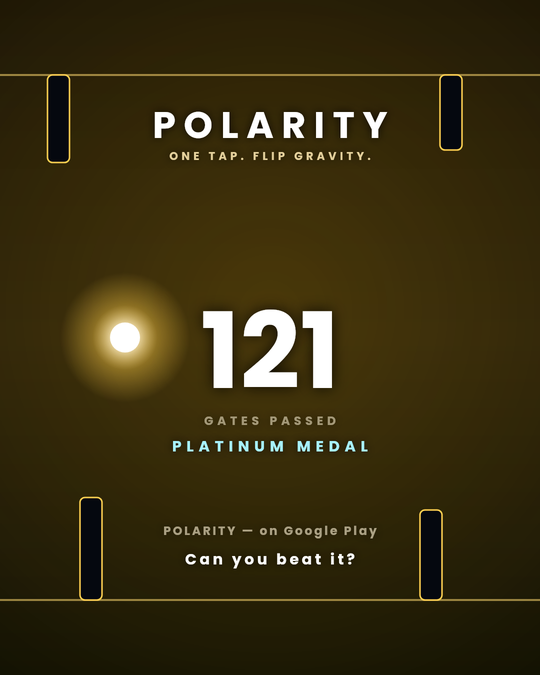

POLARITY
One tap. Flip gravity.
Tap and gravity reverses. That is the whole control scheme. Everything else is the tunnel getting faster and the gaps getting smaller, until you find out where your limit is.


Built to be fair
Every obstacle is placed against the real physics of the orb. If a gap is on screen, it can be reached — there are no arrangements you could not have survived. When you lose, it was you.
Ten patterns, each with a name
The Ladder · The Pinch · The Zipper · The Switchback · The Needle · The Comb · The Cascade · The Gauntlet · The Anvil · The Spire
Hand-built sequences that appear at fixed scores. The Needle arrives at 72 and is the tightest opening in the game.
What else is in there
- SoundtrackFour tracks, one per stage, crossfaded on a bar line. Obstacles arrive on the beat.
- Two boardsRuns where you took a revive score separately, so a clean best means exactly that.
- ShardsEarned by playing, spent on orb skins or single-run consumables.
- Every dayThree rotating challenges and a daily bonus.
- ComfortHigh contrast mode, reduced flashing, independent music and effects.
- No accountProgress stays on your device. Nothing is uploaded.
Share a run

Beat your best and the game draws a card in the colour of the stage you died in.